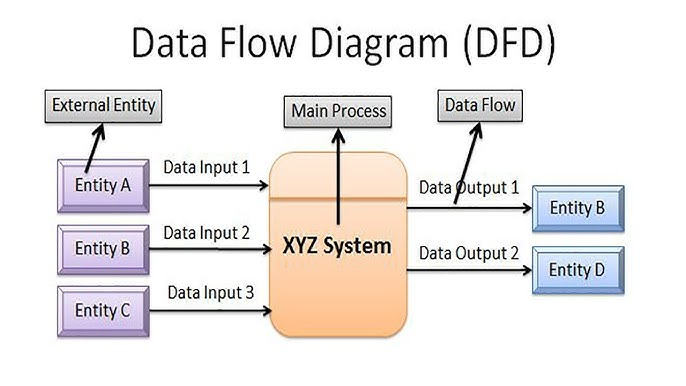

Cosa sono i DFD?
I Data Flow Diagrams (DFD) sono strumenti fondamentali per rappresentare graficamente il flusso delle informazioni in un sistema informativo. Introdotti da Tom De Marco nel 1978, sono usati in fase di analisi per comprendere come i dati si muovono tra gli elementi del sistema e come vengono trasformati.
I DFD appartengono alla categoria degli strumenti semiformali e operazionali: semiformali perché seguono regole precise ma non rigorose come quelle matematiche, operazionali perché descrivono chiaramente cosa accade dentro il sistema.
Grazie alla loro semplicità visiva, i DFD consentono di ottenere una visione chiara e gerarchica del sistema, facilitando il lavoro di analisi, progettazione e comunicazione tra analisti, sviluppatori e stakeholder.
Componenti principali
- Processi: trasformano dati in input in dati in output (es. “Calcola Prezzo”)
- Flussi di dati: rappresentano il movimento dei dati tra i componenti
- Archivi: contengono dati memorizzati (es. un database)
- Entità esterne: soggetti esterni che forniscono o ricevono dati
Perché usarli?
- Facilitano la comprensione delle funzionalità del sistema
- Aiutano a individuare requisiti funzionali mancanti
- Costituiscono una base solida per la progettazione software
- Supportano la comunicazione tra figure tecniche e non tecniche
Livelli dei DFD
I DFD sono organizzati per livelli:
| Livello | Descrizione |
|---|---|
| Livello 0 (Contesto) | Mostra il sistema come un unico processo, con interazioni esterne |
| Livello 1 | Scompone il sistema in processi principali, archivi e flussi |
| Livelli successivi | Raffinano ulteriormente i processi in sottoprocessi dettagliati |
Tipologie di specifica con DFD
- Operazionali: mostrano cosa accade nel sistema passo dopo passo
- Descrittive: indicano cosa deve accadere, senza imporre come
Conclusione: perché i DFD sono utili?
Utilizzare i Data Flow Diagrams consente di:
- Analizzare il sistema in modo strutturato
- Individuare facilmente errori o ambiguità nei requisiti
- Ridurre i tempi e i costi legati a modifiche successive
- Ottenere una documentazione visiva efficace
In sintesi, i DFD rappresentano un ponte tra l’analisi concettuale e la progettazione tecnica: sono uno strumento potente, semplice ed efficace, che dovrebbe far parte di ogni buona analisi del software.